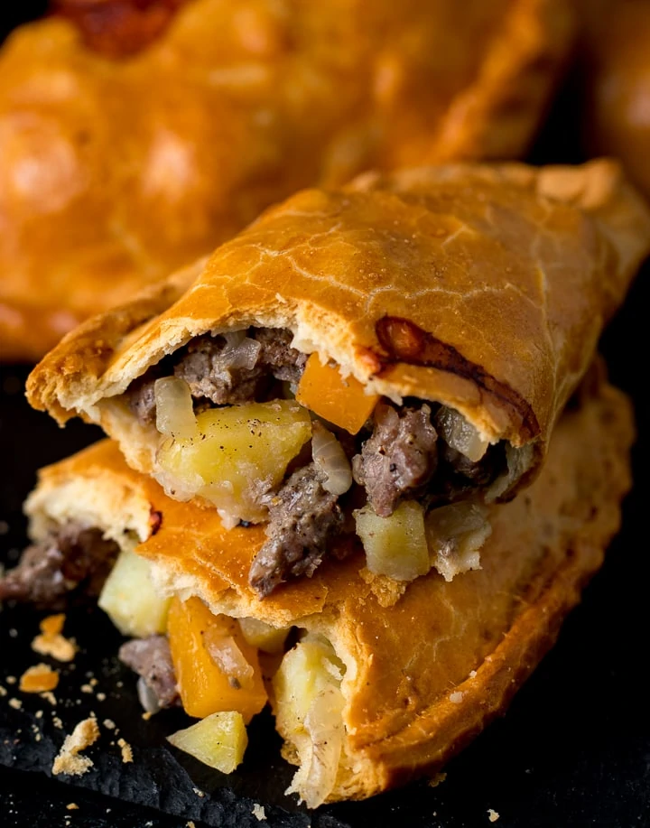

Cornish Pasties
The Cornish pasty has a unique and interesting history that goes back centuries. Cornwall has the biggest tin mining and one of the biggest copper mining industries in the world and the pasties were originally developed for Cornish miners. These men worked deep underground and needed a lunch that would meet the demands of their work environment. The thick shortcrust dough and dense filling would stay warm for several hours until lunchtime or could be easily reheated over the flame of an oil lamp.
The pasties were sealed with a thick crimp to hold in the contents and to provide something the miner’s could hold onto while eating the pasty. In this way their dirtied fingers, which could often contain traces of arsenic, wouldn’t contaminate the rest of the pasty. The crimped edge was sometimes extended out to form a little dough handle they could hold onto and then discard when they were done eating.
Although the mine of whisper bay has been closed, we can still enjoy these hearty delights!
Place the flour and salt in a food processor and pulse a few times until combined. Add the cold butter and lard and pulse a few more times until the mixture resembles coarse crumbs.
Add the water a little at a time, pulsing between additions, until the mixture begins to come together. DO NOT over-mix the dough or the pastry crust will be tough and won’t be flaky.
Form the dough into a ball, flatten into a 1-inch thick disk, wrap in plastic wrap and refrigerate for at least 3 hours before using (this is crucial). (Can be refrigerated for a few days or frozen for up to 3 months.) Roll the pastry dough into a log and cut it into 6 equal pieces.
Wrap and keep the other 5 pieces chilled in the fridge while you’re working on one at a time. Roll the dough out on a lightly floured work surface to a 8 inch circle that’s about 1/8 inch thick. You can use an 8-inch plate as your guide and cut the dough around it to form your circle.
Layer the filling (each ingredient to be divided out between 6 pasties, there may be some excess remaining): Put layer of potatoes down the center of the pastry circle, leaving about 3/4 inch space on the top and bottom edges of the pastry dough. Lightly sprinkle with salt and pepper.
Next add a layer of rutabagas and sprinkle with salt and pepper.
Add a layer of beef followed by the onions and sprinkle with salt and pepper. After that, lay a couple of pats of butter on top of the beef and sprinkle a little flour over the filling.
Wet the tips of your fingers and lightly moisten the edges of the pastry dough.
For the remaining steps work gently so that the filling doesn’t puncture through the dough. If this happens, patch up the hole with some of the scrap pieces of pastry dough. Bring the sides up and seal the pasty down the middle.
Turn the pasty onto its side and crimp/braid the edges in traditional Cornish fashion. This is the challenging part of making traditional Cornish pasties and takes some practice.
Assemble the remaining pasties and lay them on a lined baking sheet. Use a sharp knife to cut a slit in the center of each pasty.
Lightly brush each pasty with the beaten egg mixture. Bake the Cornish pasties on the middle rack for 40-50 minutes until golden in color. Remove from the oven and let them sit for about 10 minutes (they will be very hot inside) before eating.